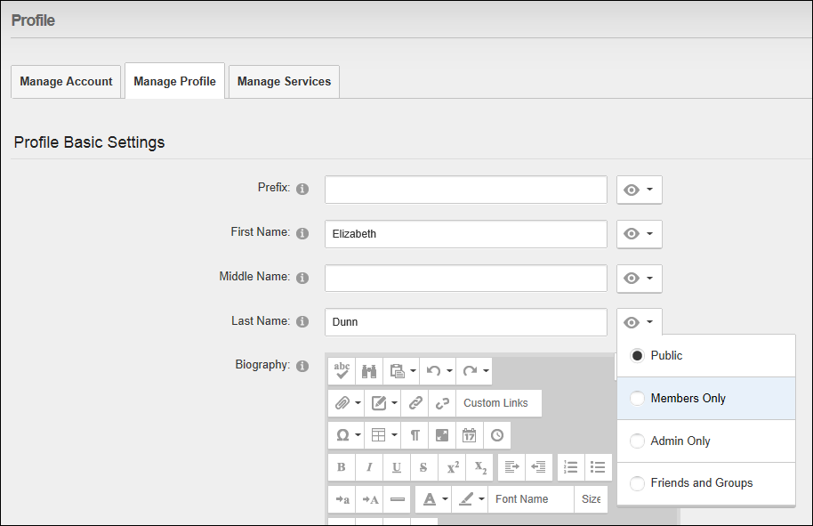
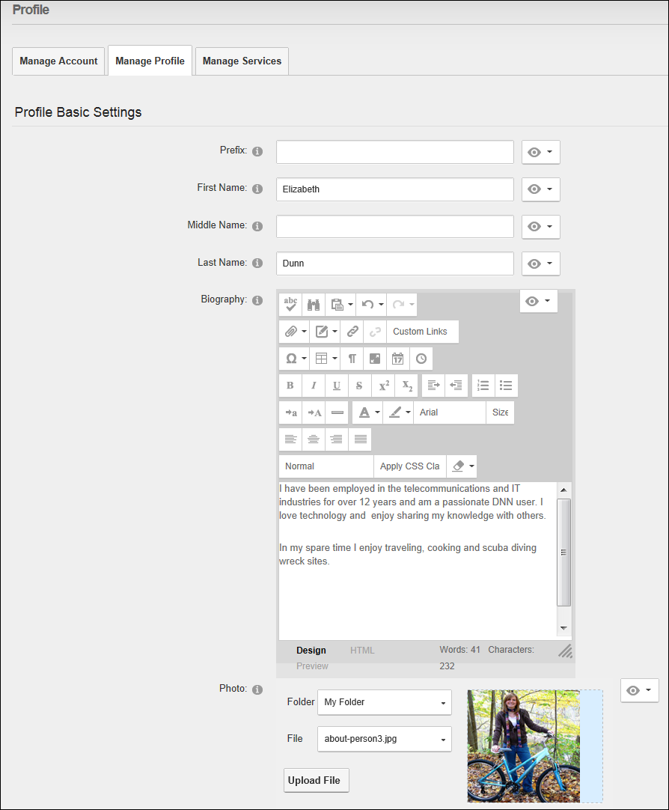
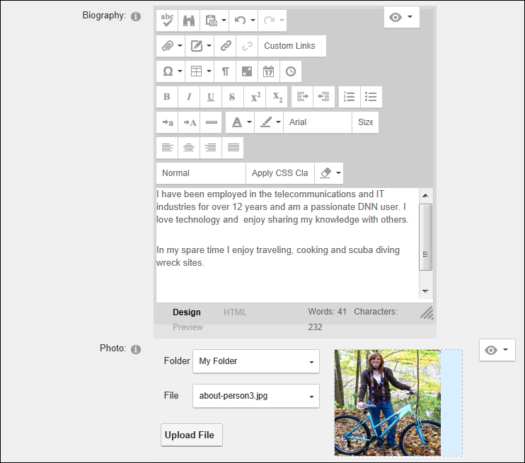
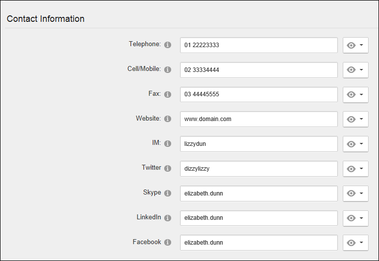
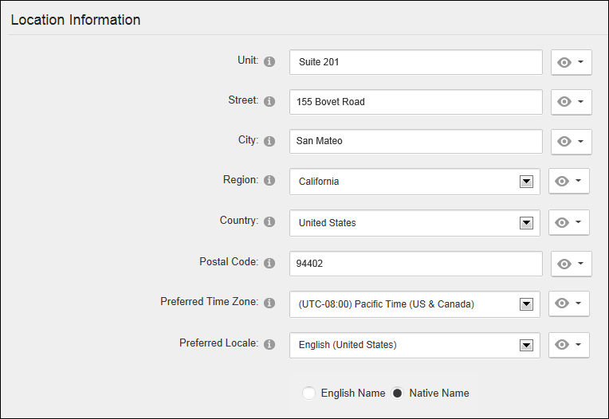

Managing your User Profile
How to manage all your personal user details including your name, contact details, biography, photo, time zone and preferred locale. The fields used in this example are typical for a US based site; however sites in other countries will typically use local names for address fields, etc.
You can manage the privacy of each field of your user profile by modifying the Visibility setting displayed beside a field. The following options are provided:
- Public: Select to set a field as visible to any site visitor or member who can view your user profile.
- Members Only: Select to set a field as visible to all authenticated site members.
- Admin Only: Select to set a field as visible to Administrators only.
- Friends and Groups: Select to set a field as visible to your friends and the members of all social groups you have joined. You can further refine this setting by select either Friends or Followers.
In the default set-up, all name fields (Prefix, First Name, Middle Name, Last Name and Suffix) and the Photo field are set as visible to the Public and all other fields are set as visible to Admin Only.
Tip: Administrators can further modify the Manage Profile page by adding, renaming and modifying fields and set default values. See "Configuring Profile Settings" and See "Adding a New Profile Property"

Here's how to update your user profile:
- Login to the site. See "Logging into a Site"
- Click on your [Display Name] link (typically located in the top right corner of the site) - OR - Navigate to a ViewProfile module. This displays the user profile page.
- Click the Edit Profile button.
- Go to the Profile Basic Settings section of the Manage Profile tab and complete or edit any of the following fields and then select the Visibility for each field (see note above).
- In the Prefix text box, enter a prefix for the name. E.g. Mr
- In the First Name text box, enter the first name. E.g. James
- In the Middle Name text box, enter the first name. E.g. A
- In the Last Name text box, enter the first name. E.g. Woolworth

-
- In the Biography Editor, enter a biography.
- At Photo select, upload or remove your profile image. See "Managing your Profile Photo"

- Expand the Contact Information section.
- In the Telephone text box, enter your telephone number.
- In the Cell/Mobile text box, enter your mobile number.
- In the Fax text box, enter your facsimile number.
- In the Website text box, enter your web site URL. E.g. www.awesomecycles.biz
- In the IM text box, enter your instant messenger id. E.g. j.woolworth@awesomecycles.biz
- In the Twitter text box, enter your twitter account name.
- In the Skype text box, enter your Skype account name.
- In the Twitter text box, enter your twitter account name.
- In the Facebook text box, enter your Facebook name.

- Expand the Location Information section.
- In the Unit text box, enter a unit number. E.g. Suite 36
- In the Street text box, enter the street address. E.g. 3457 W. Somewhere Street
- In the City text box, enter the city. E.g. Someplace
- In the Region text box, enter/select the region. E.g. CA. Note: If your country is either Canada or United States of America, select the Country before selecting a Region as this will pre-populate the Region field.
- At Country, select a country from the drop down list. United States
- In the Postal Code text box, enter/select the postal code.
- A Preferred Time Zone, select your preferred time zone.
- At Preferred Locale,
set the following:
- Select English Name to display your locale in English (E.g. Italy) - OR - Select Native Name to display the native spelling of your locale (E.g. Italia)
- Select the name of your preferred locale from the drop down list. Note: The list of available locales is managed using the Languages module. See "Enabling/Disabling a Language"

-
Click the Update button.